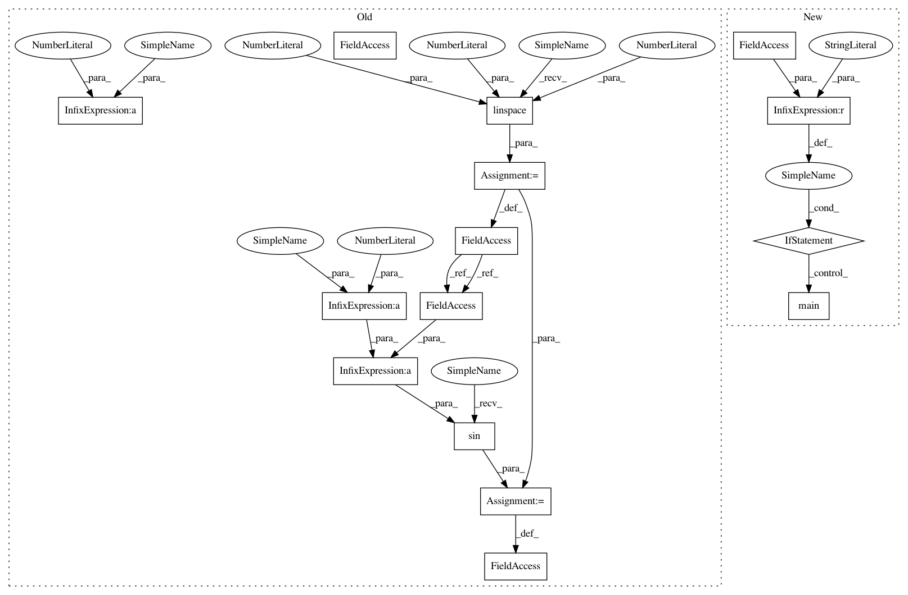

9af9ab51cee0c212ba1c689ae047558889464bc2,test/examples/test_white_noise_regression.py,,,#,19
Before Change
// Simple training data: let"s try to learn a sine function
train_x = torch.linspace(0, 1, 11)
train_y = torch.sin(train_x * (2 * pi))
test_x = torch.linspace(0, 1, 51)
test_y = torch.sin(test_x * (2 * pi))
class ExactGPModel(gpytorch.models.ExactGP):
def __init__(self, train_inputs, train_targets, likelihood):
After Change
self.test_posterior_latent_gp_and_likelihood_fast_pred_var(cuda=True)
if __name__ == "__main__":
unittest.main()
In pattern: SUPERPATTERN
Frequency: 3
Non-data size: 15
Instances
Project Name: cornellius-gp/gpytorch
Commit Name: 9af9ab51cee0c212ba1c689ae047558889464bc2
Time: 2018-11-22
Author: balandat@fb.com
File Name: test/examples/test_white_noise_regression.py
Class Name:
Method Name:
Project Name: cornellius-gp/gpytorch
Commit Name: 9af9ab51cee0c212ba1c689ae047558889464bc2
Time: 2018-11-22
Author: balandat@fb.com
File Name: test/examples/test_white_noise_regression.py
Class Name:
Method Name:
Project Name: cornellius-gp/gpytorch
Commit Name: 9af9ab51cee0c212ba1c689ae047558889464bc2
Time: 2018-11-22
Author: balandat@fb.com
File Name: test/examples/test_kronecker_multitask_ski_gp_regression.py
Class Name:
Method Name:
Project Name: cornellius-gp/gpytorch
Commit Name: 9af9ab51cee0c212ba1c689ae047558889464bc2
Time: 2018-11-22
Author: balandat@fb.com
File Name: test/examples/test_simple_gp_regression.py
Class Name:
Method Name: